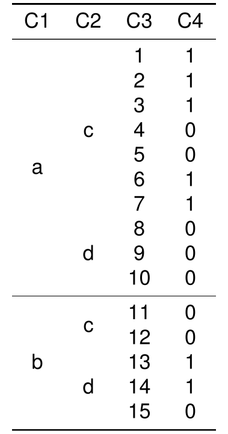

library(texPreview) tex_opts$set( returnType = 'html', opts.html = list(width = '50%', height = '50%') )
tex_file <- system.file('examples/toy/toy.tex',package = 'texPreview')
readLines(tex_file) #> [1] "\\begin{tabular}{cccc}" "\\toprule" "C1 & C2 & C3 & C4\\\\" #> [4] "\\midrule" "a & c & 1 & 1\\\\" "a & c & 2 & 1\\\\" #> [7] "a & c & 3 & 1\\\\" "a & c & 4 & 0\\\\" "a & c & 5 & 0\\\\" #> [10] "\\addlinespace" "a & c & 6 & 1\\\\" "a & c & 7 & 1\\\\" #> [13] "a & d & 8 & 0\\\\" "a & d & 9 & 0\\\\" "a & d & 10 & 0\\\\" #> [16] "\\addlinespace" "b & c & 11 & 0\\\\" "b & c & 12 & 0\\\\" #> [19] "b & d & 13 & 1\\\\" "b & d & 14 & 1\\\\" "b & d & 15 & 0\\\\" #> [22] "\\bottomrule" "\\end{tabular}"
kbl <- tex_file%>% texPreview::as.kable()
kbl%>% kableExtra::collapse_rows(columns = 1:2, latex_hline = "major", valign = "middle")%>% texPreview::tex_preview()
